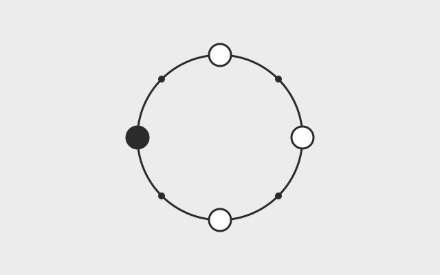

FROM TRIAL BY TRACE · CASE 02
A correct answer can hide a missing error signal.
In a selected comparison using the same model, both agents correctly reported that a command exited with code 23. Yet the post-tool observer recorded a structured failure in one run, while the other had a null exit code and an error flag set to false.
Both task reports passed their checks; the harness assessments differed. This is why TraceTrial-Bench examines the execution evidence alongside the final answer. The case illustrates a distinction, rather than estimating how often it occurs.
Read the trace comparison · report p. 68 →

What is an agent's environment made of?
We want to describe an environment the way we describe a model: by listing the factors that change what the right move is.
Agents learn in environments and are tested in them. Yet when a paper says it evaluated in a reproducible environment, it usually means one Docker image. Which operating system is inside, which user the agent runs as, whether it can reach the network, which time zone and locale it uses — most of this goes unstated.
We want to fix that. The test is simple: a factor belongs to the environment if it changes what the correct way to finish the same task is. Factors that only make the work slower or more expensive do not count. Applying this test, we have listed 22 factors across hardware, system, runtime, what the agent can see, and the outside world.
Two things come next. A survey that puts the different communities' uses of the word “environment” side by side, and an open Environment Card so that anyone publishing a benchmark or a training environment can describe it the same way. Drafts of both are on our GitHub.

Evaluating the harness, not just the model
The same model can behave very differently inside different agent harnesses. We want that difference to be measurable.
An agent is a model plus a harness. The harness manages context, tool calls, permissions and retries, so it decides what the model sees and what it can do. When people compare models by score, they usually treat the harness as neutral. It is not.
Trial by Trace is our first report on this: it scores the task result and the harness behaviour separately, and every judgement can be traced back to the execution record. Next, we want to turn it into a public leaderboard that is updated regularly, covers more harnesses and models, and publishes its criteria so harness developers can use them as regression tests.

Turning failures into training data
Agents fail all the time on real tasks, and most of those failures are thrown away. We want to keep the useful ones.
Training data for agents is still mostly written by people: people label trajectories, people build environments. It is slow and expensive. Meanwhile, the mistakes agents make on real tasks are good material in their own right: they show where the model went wrong and on what assumption.
The hard part is deciding whose failure it is. The same failed run might be the model's mistake, or the harness dropping information, or an environment that is not what the agent expected. Training on failures without sorting this out teaches the model the wrong lesson.
So our order is: reproduce the failure, work out the cause, and only for failures that are genuinely the model's, write the corrected approach and replay it in the same environment. A correction becomes a training example only after it passes that replay.

Closing the loop
Evaluation, environments, attribution and training data are usually built by different teams. We think they belong in one loop.
Evaluation finds a problem, the environment makes it reproducible, attribution says where it came from, the corrected data goes into training, and the trained model comes back to be evaluated again. Each of these steps has people working on it. They are rarely connected.
We want to connect them, and to have machines run as much of the loop as possible rather than people pushing each round by hand. Then how fast a model improves depends on how fast the loop turns, not on how large the labelling team is.
We are early. Over the next year we will make the evaluation and environment pieces solid first, then train a model once on data the loop produced and check whether it actually improves on tasks it has not seen. Whatever the result, we will publish it here.